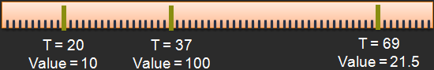

SRT animation means Scale-Rotation-Translation animation. In other words : how to animate the transformation of my nodes ?
{{project.name}} embed a complete animation engine based on
timelines and animation keys to
fulfill all the needs (I hope :)).
An animation key is a couple time/value, and define on a timeline the value of a property at
the given time.
Each value between 2 keys will be computed by the framework, based on the chosen
interpolation algorithm (« linear » is the only interpolation method available on the {{project.name}} < v3).
Example of a timeline with 3 animation keys : 
var timeline = CGSG.animationManager.animate(this.squareNode, "position.x", 300, 0, 300, 0);
timeline.addInterpolationKey(100, 300);
timeline.addInterpolationKey(170, 0);
timeline.addInterpolationKey(220, 150);
timeline.addInterpolationKey(260, 0);
timeline.addInterpolationKey(285, 70);
timeline.addInterpolationKey(300, 0);
timeline.compute();
/*
* Animate an attribute of a nodes
* @param node Handler to the nodes to animate
* @param attribute String representing the attribute to animate ("position.y", "rotation.angle", "color.r", ...)
* @param duration Integer. Duration of the animation, in frames
* @param from Start value
* @param to End value
* @param delay Integer. Delay before start the animation, in frames
*
* @example CGSG.animationManager.animate(imgNode, "position.x", 700, 0, 200, 0);
*/
CGSG.animationManager.animate(myNode, « property », 45, valueFrom, valueTo, 0);
Almost everything is animatable in {{project.name}}, if the
property is a number. So you can not animate the position of a node in 1 call, you have to
animate position.x and position.y
That's logical, because may be you don't want to
animate x and y the same way...
For examples:
//animate x position during 30 frames, from 0 to 200, starting in 0 frame
var timeline = CGSG.animationManager.animate(this.squareNode, "position.x", 30, 0, 200, 0);
//animate y position during 30 frames, from 0 to 200, starting in 0 frame
CGSG.animationManager.animate(this.squareNode, "position.y", 30, 0, 200, 0);
CGSG.animationManager.animate(this.squareNode, "rotation.angle", 30, 0, Math.PI, 0);
//animate opacity from 0 to 1, in 30 frames and starting in 15 frames
CGSG.animationManager.animate(this.squareNode, "globalAlpha", 30, 0, 1, 15);
//animate red component of the color from 0 to 255, in 100 frames and starting in 15 frame (now)
CGSG.animationManager.animate(this.squareNode, "bkgcolors[0].r", 100, 0, 1, 15);
As in {{project.name}} the animation is managed by a timeline, so
events related to the animation are also managed by this one.
There are 3 events for an animation:
//assuming you have an animation on the couple squareNode/"rotation.angle"
CGSG.animationManager.getTimeline(squareNode, "rotation.angle").onAnimationStart = function (event) {
console.log("animation started");
};